Ngày 3 tháng 11 năm 2024
Buổi hẹn hò đầu tiên của chúng ta
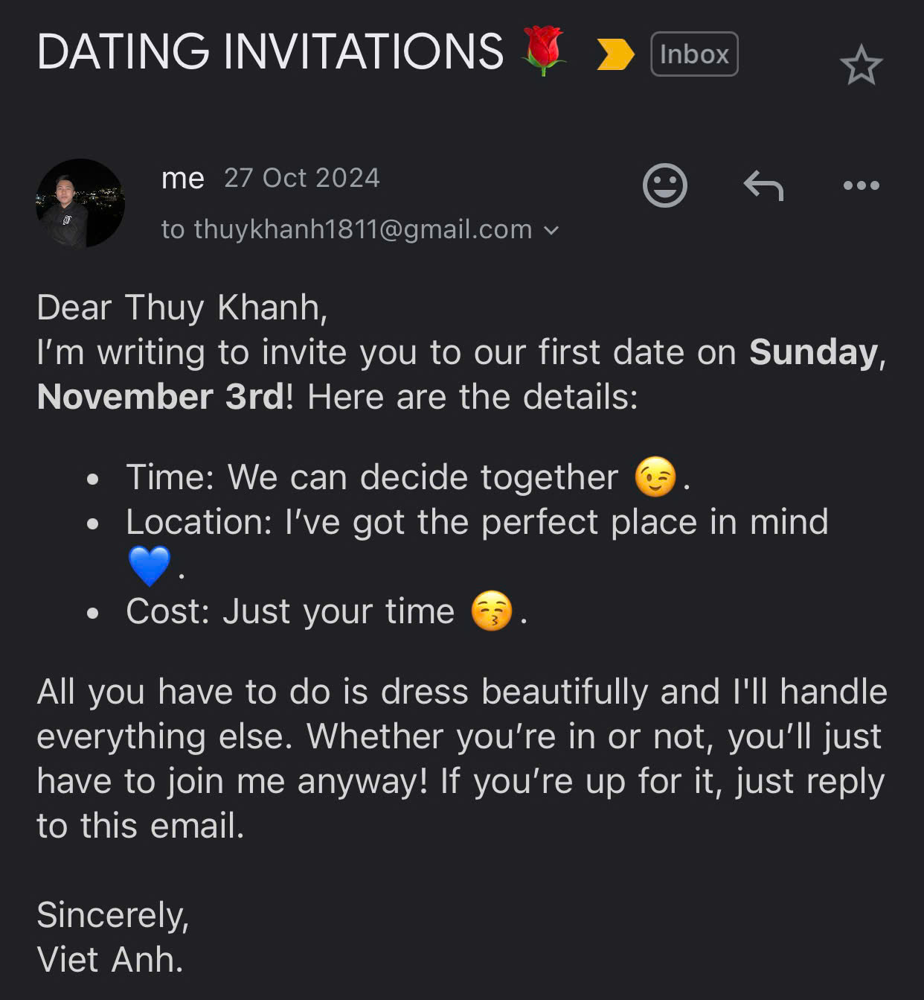
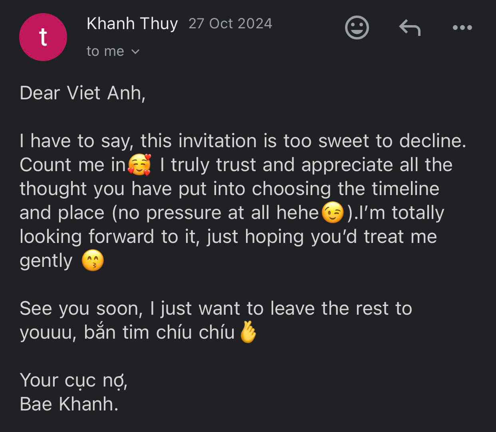

Em còn nhớ buổi hẹn hò đầu tiên của chúng ta không, anh thì nhớ rõ lắm, hôm đấy anh chuẩn bị rất nhiều thứ, từng tí một vì anh lo lắng anh sợ rằng anh sẽ không làm cho em thấy vui và thoải mái như lúc nói chuyện trên mạng, lúc đợi em bước ra anh đã vì lo lắng quá mức dẫn đến việc bản thân anh đã chở em sang nhầm chi nhánh. Nhưng anh nghĩ nó cũng là ý trời vì cho anh được gần gũi với em hơn, được nói chuyện với em nhiều hơn và hiểu em hơn lúc đó. Tụi mình ngồi ăn với nhau lúc đó anh cũng căng thẳng nữa, anh cứ làm như em bé ăn thịt anh ấy em nhỉ, mãi nhờ em cười nói mà anh đã bình thường lại. Sau buổi đấy anh cảm thấy rất vui và hạnh phúc vì em đã chấp nhận chính con người thật của anh và cùng anh có được buổi hẹn thứ hai.
Ngày 15 tháng 11 năm 2024
Tiếp tục đến với buổi hẹn thứ 2 và 3 của chúng ta
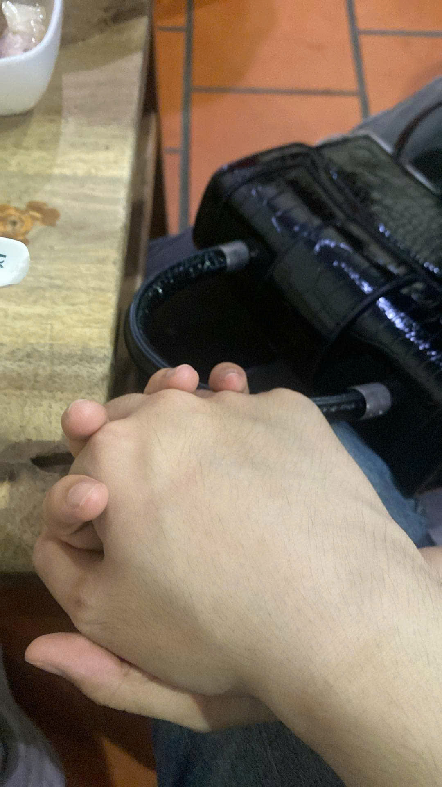
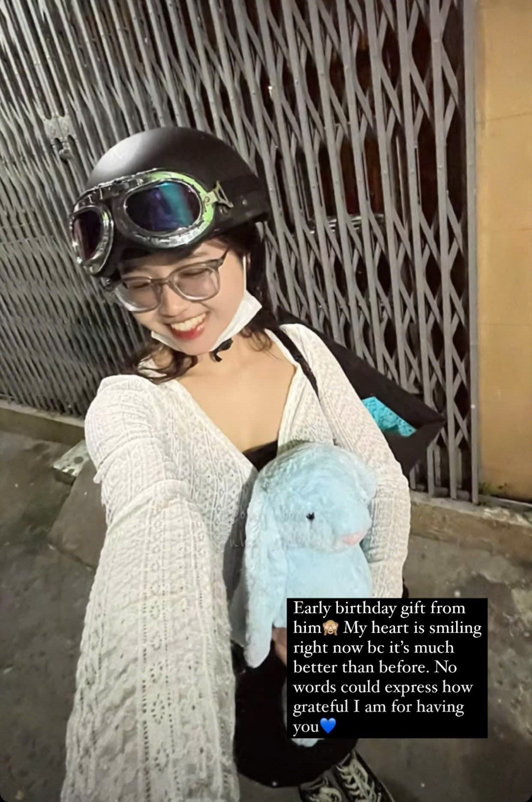
Anh sẽ tập trung vào buổi hẹn thứ 3 chứ không phải là thứ 2, anh nghĩ là em chắc cũng đoán ra phải không nè. Vì hôm nay là một ngày rất quan trọng trong cột mốc mối quan hệ của chúng ta đó, chính là ngày mà anh chính thức ngỏ lời với em sau 1 tháng tìm hiểu, anh cũng đã rất căng thẳng vào hôm đó, anh sợ rằng em sẽ từ chối anh vì anh hơi vội vàng và anh không phải là người hoàn hảo như em nghĩ. Anh vẫn còn nhớ quán đấy là quán sữa chua trân châu Hạ Long, anh với em ngồi ở ngoài quán. Em còn nhớ những lời mà anh nói với em chứ, kể từ giờ hãy để anh lo cho em, để anh là người bên cạnh em lắng nghe và thấu hiểu em, khi ở bên anh em cũng không cần phải cố tỏ ra mạnh mẽ, đừng lúc nào cũng tự mình giải quyết một mình, em buồn thì dựa vào anh, em tức giận gì thì cứ đánh anh đây này, anh sẵn lòng cùng em vượt qua mọi thử thách, chuyện gì anh cũng đứng về phía em, cùng em giải quyết được. Và quan trọng nhất là câu nói "Tìm được người yêu mình thì dễ, mà tìm được người dù mình có như thế nào họ vẫn yêu mới khó." Thời gian sắp tới đây anh sẽ chứng minh tất cả. Sau cuối cùng thì em đã đồng ý với anh, anh lúc đó rất là vui luôn.
Ngày 23 tháng 11 năm 2024
Buổi workday đầu tiên
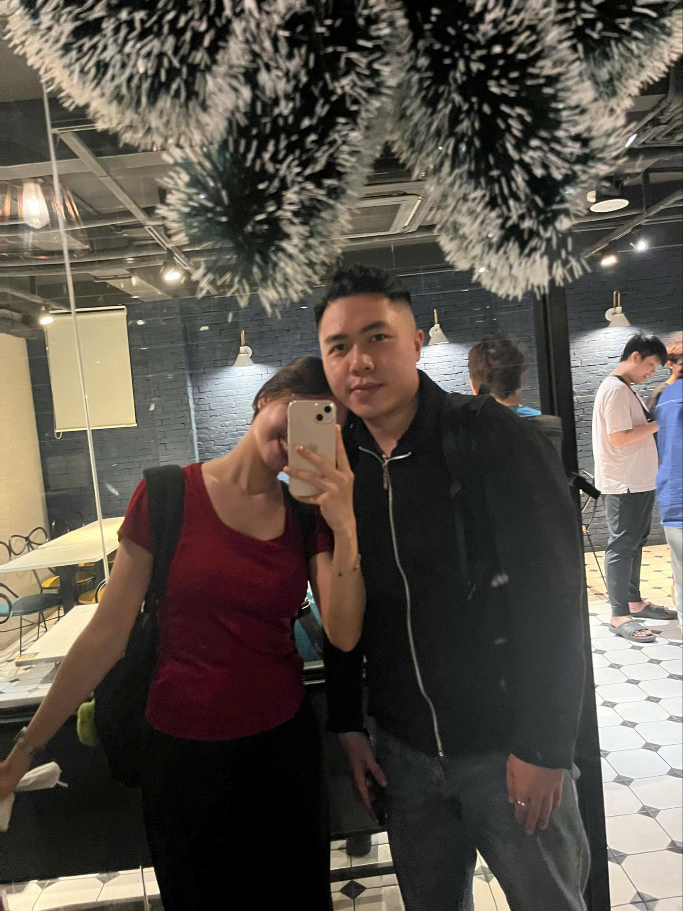
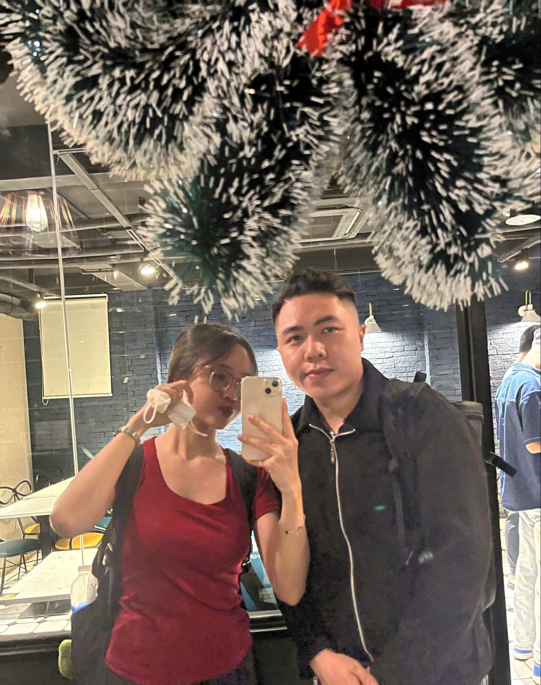
Bé liệu còn nhớ hong đây là buổi workday đầu tiên của 2 đứa đó, anh đòi đi học bài đồ đó xách nguyên cái cặp nặng rồi mình cùng đi ra quán nước học bài nè, em còn nhớ quán đó chứ, anh thì vẫn nhớ là quán Namoo Coffee Q3 nè, anh vẫn nhớ như in là hôm đấy anh vì đến trễ một chút mà em bé suýt giận anh luôn, may sao là em bé của anh không có giận mấy chuyện lặt vặt để ảnh hưởng tâm trạng 2 đứa nên là em đã hong giận nữa. Anh thì thấy có lỗi và cũng hứa với em là lần sau anh sẽ tới sớm hơn một chút, mình cùng học bài tới chiều xong rồi em đề xuất đi ăn với anh, anh cũng nhớ là mình ngồi lựa quán dữ lắm cuối cùng thì em rủ anh đi VeeAyy Food, nơi đó cũng là nơi mà anh thấy rất vui khi nghe em kể là quán ruột của em hồi còn đi học. Em cũng bảo anh là nhất định sau này mình sẽ ăn tiếp ở đây, anh bắt đầu bây giờ cũng thấy nhớ nhớ rồi nè, anh mong là sau này mình sẽ ăn nhiều nhiều lần nữa cùng nhau ở đấy em nhé!
Ngày 28 tháng 11 năm 2024
Lễ tốt nghiệp của Vanh
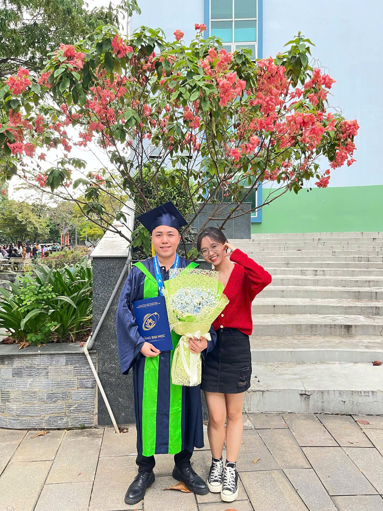
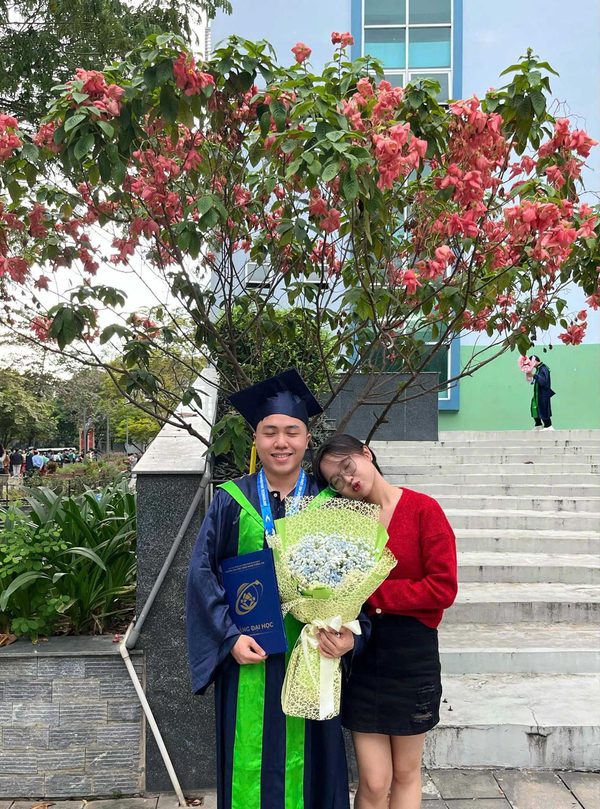
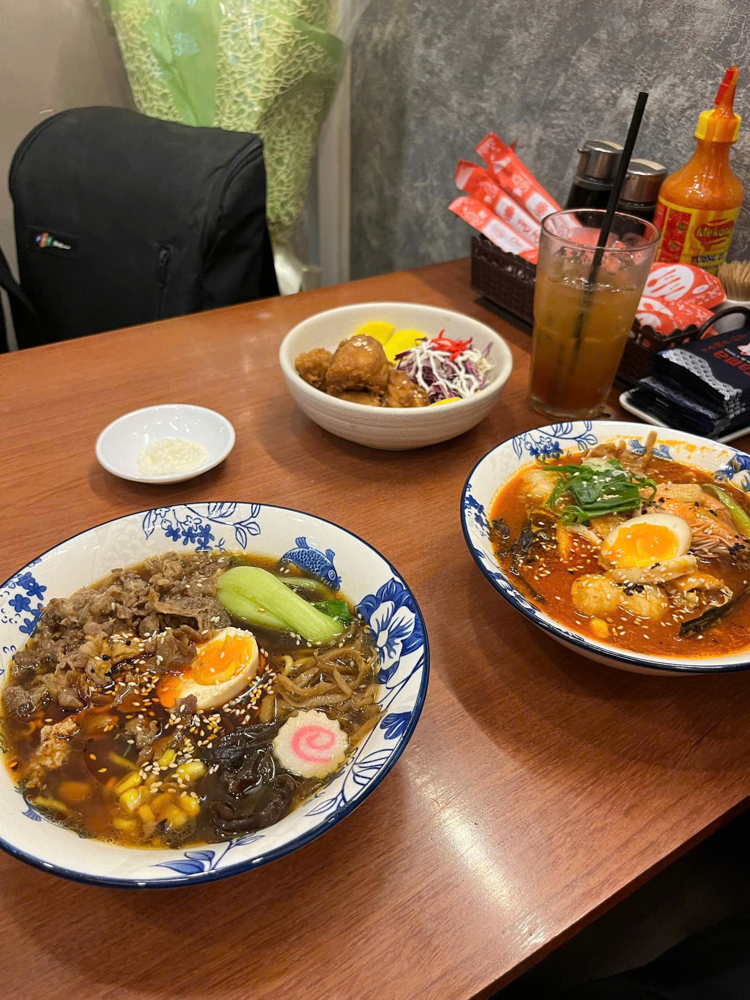
Đây chắc hẳn cũng là những ngày đáng nhớ và để lại trong anh nhiều kỉ niệm nhất. Lễ tốt nghiệp của anh, đánh dấu một cột mốc đáng nhớ trong cuộc đời anh. Anh cũng rất vui vì em đã đến và tham dự ngày hôm nay, anh vì sợ phiền mọi người mà anh chẳng mời ai cả, người duy nhất anh không thể không mời chính là cô gái của anh, anh muốn cùng em trải qua những khoảnh khắc đó, muốn cùng em lưu giữ nó, muốn sau này bất kể những sự kiện trọng đại đều có em trong đó. Anh cảm thấy may mắn khi gặp được em 💙.
Ngày 8 tháng 12 năm 2024
Hẹn hò thể chất
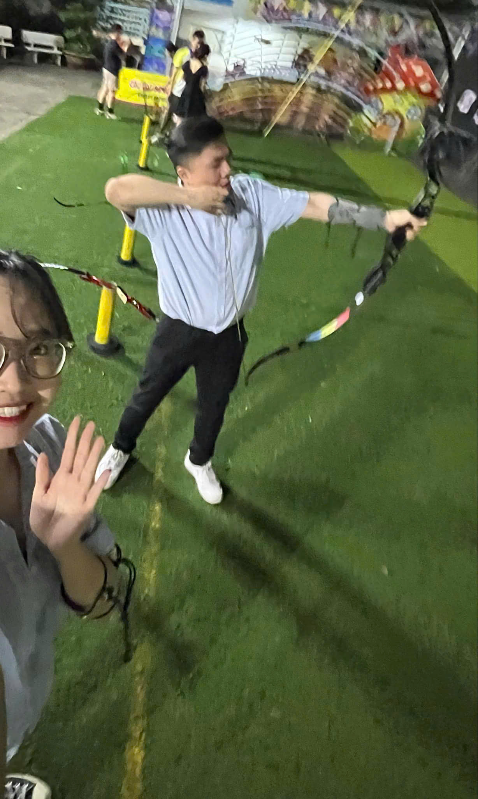
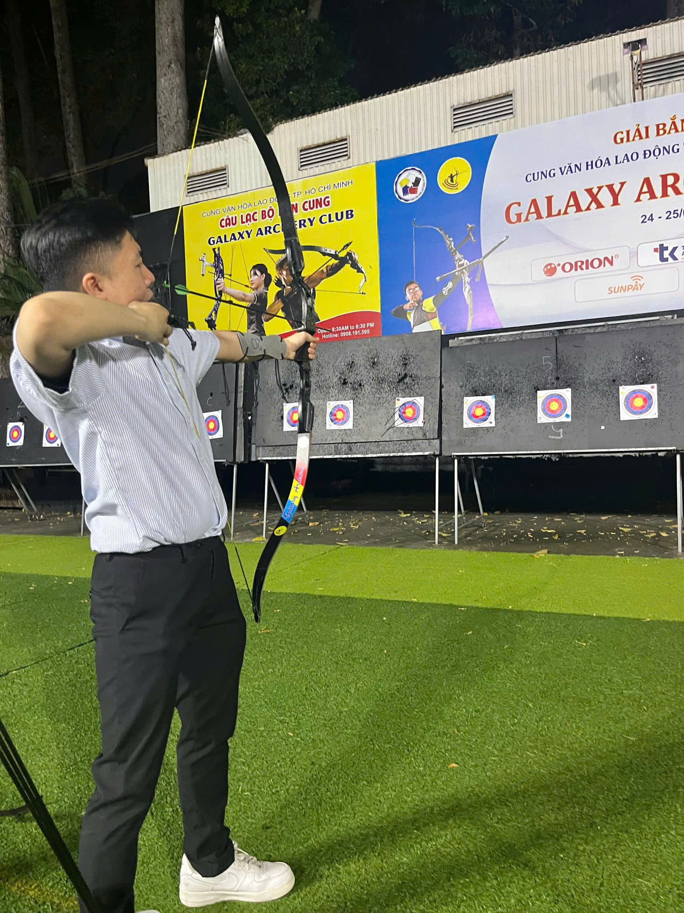
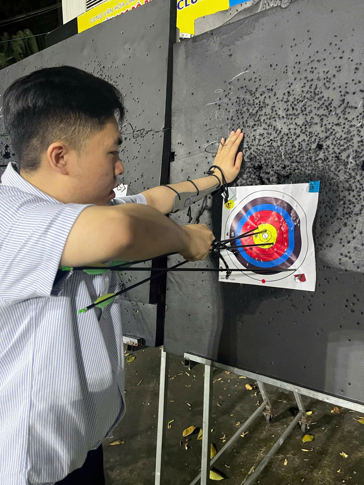
Tụi mình đã lên kế hoạch cùng nhau đi thử môn thể thao mới với anh nhưng cũ với em đó là bộ môn bắn cung, em lúc này giỏi lắm luôn, em đã biết chơi nên em bé bày anh, cuối cùng thì anh cũng bắn được, em cũng khen anh nhiều lắm. Và đây cũng là lần đầu tiên anh chơi mấy này cùng người mình yêu, anh cảm thấy hạnh phúc lắm em bé. Cũng lâu lắm rồi nhỉ, mình cũng nên có lại 1 buổi vầy em ha. Anh mong là mình sẽ sớm trải nghiệm nên bộ môn khác chứ xương cốt tui giờ cần được giãn lắm gòi.
Ngày 29 tháng 12 năm 2025
Một trong những ngày cuối cùng của năm
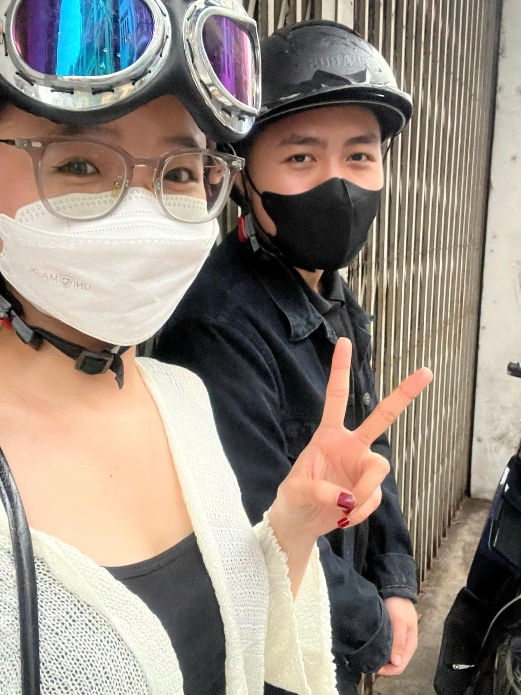
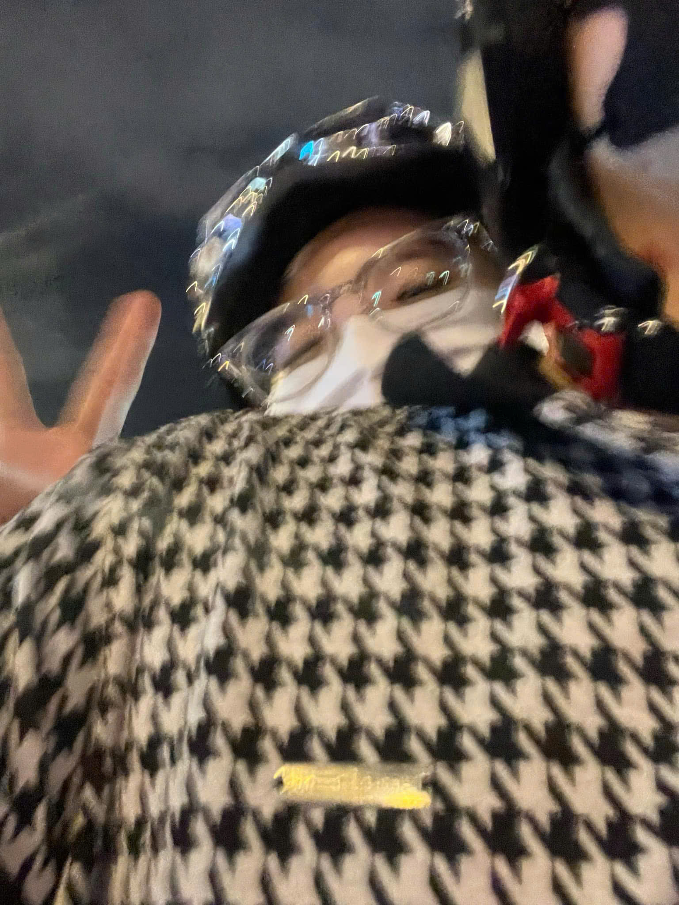
Một trong những ngày cuối cùng của năm cũ, năm mà cho anh gặp em, anh nghĩ anh thật là may mắn khi gặp được em, không biết bằng một cách nào đó mà tụi mình đã cố gắng đến tận bây giờ em nhỉ, anh càng nghĩ càng thấy anh thật may mắn khi được bên em, em là người xóa tan mọi muộn phiền trong anh, em là chỗ dựa vững chắc cho anh, anh rất thương em, anh mong là mình sẽ cùng nhau đi hết những năm sau này, cùng nhau trải qua mọi khó khăn, mọi thử thách, mọi niềm vui, mọi nỗi buồn, mọi cảm xúc, mọi kỉ niệm, mọi ngày lễ, mọi dịp đặc biệt, mọi ngày thường, mọi ngày nắng, mọi ngày mưa, mọi ngày gió, mọi ngày bão, mọi ngày nắng, mọi ngày tuyết...
Ngày 8 tháng 2 năm 2025
Buổi gặp đầu tiên sau kỳ nghỉ Tết
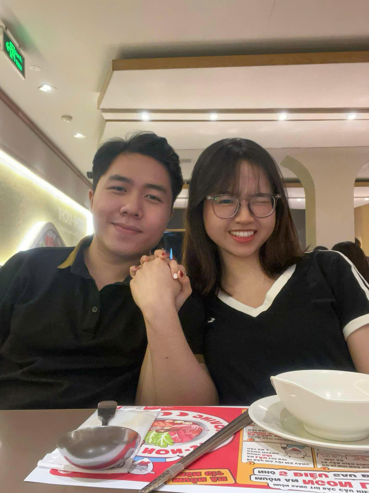
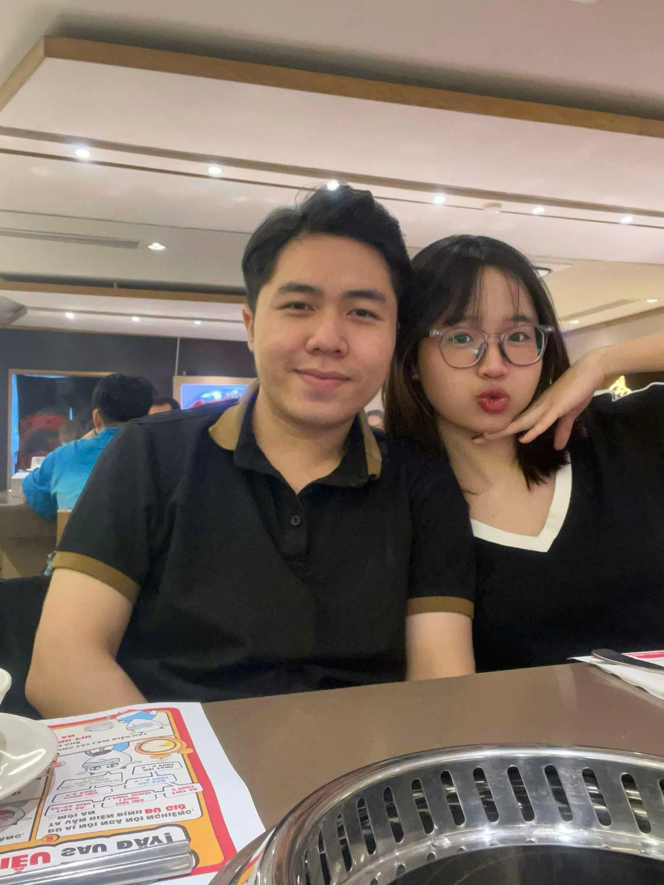
Buổi hẹn đầu tiên sau kỳ nghỉ của cả hai. Anh với em đều mang tâm trạng rất nhớ nhau, mình phải yêu xa rất lâu trong kỳ nghỉ Tết này, anh sắp không chịu nổi luôn ấy, anh chỉ đếm từng ngày từng ngày cho đến khi được gặp em mà thôi, em cũng vậy đúng chứ, anh rất thích được đi cùng cho dù là có đi đâu, em đừng nghĩ anh vì bận rộn mà anh không muốn đi nữa nha, anh không muốn đi thì sao anh phải cố chấp để gặp em đến vậy chứ em bé của anh. Anh thương em nhiều lắm 💙.
"Anh biết anh không phải là người đàn ông hoàn hảo mà em tìm kiếm,
nhưng anh sẽ yêu em theo cách hoàn hảo nhất." - Viết Anh của em 💙